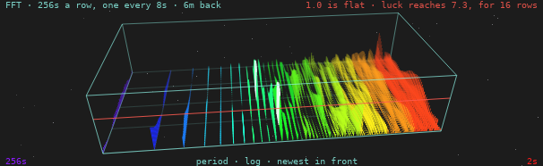

The waterfall
A short-time Fourier transform of a Geiger counter, kept a row at a time: what the accumulated spectrum throws away, which is when.
A lab report in the IEEE style, on the FFT graph radbeeper-gui draws under its spectrum. Written against radbeeper 0.5.0, 29 September 2026. Every figure in it was measured on the day, either on the bench's two counters or on simulated counts, and says which.

Abstract
RadBeeper already looks for anything arriving on a schedule, with a power spectrum averaged over every window it has ever taken. Averaging is how a faint period is found and how its time is lost: a line that was present for ten minutes an hour ago and one that has been present all along come out as the same bar. This report describes the second view that was added beside it. Each 256-second window's periodogram is kept as a row of its own; a row is taken every 8 seconds; the newest 48 are drawn one behind another in a box seen in perspective from a camera that does not move. The picture spans 6 minutes 16 seconds of rows, made from 10 minutes 32 seconds of counts, and resolves periods from 2 seconds to 4 minutes 16 seconds. A row on its own is noise by construction. The report gives the arithmetic of a row, the flow from the counter's serial port to the pixel, the measured length of the ridges that chance draws -- 16 rows at most -- and what the view can and cannot find.
Index terms -- short-time Fourier transform, spectrogram, waterfall display, periodogram, Poisson process, radiation monitoring, perspective projection.
I. Introduction
A. The problem
Radioactive decay is a Poisson process and the power spectrum of a Poisson process is flat. The spectrum uses that: it averages periodograms, the scatter falls as 1/√N, and anything periodic -- mains hum on a tube's supply, a fan carrying a source past, firmware that batches its reports -- climbs out of a floor that is settling under it.
The average has one number for each period. It cannot say whether the period is there now, whether it came and went, or whether it began when somebody switched something on. Those are the questions asked of a line once it has been seen.
B. What was asked for
The form is the one SETI@home's screensaver made familiar: a glass box on a dark ground, frequency across the front in the colours of the rainbow, power as thin spikes standing on the floor, and time running back into the box [3]. The one instruction beyond that was that the camera must not move.
II. One row
A row is a periodogram of the last W = 256 seconds of counts per second, summed across the tubes. In order:
| Step | What is done | Why | ||
|---|---|---|---|---|
| 1 | Take the newest 256 seconds, *x*₀ … *x*₂₅₅ | a power of two, for a radix-2 transform | ||
| 2 | Subtract their mean | the DC term is the count rate, which every other number on the panel gives | ||
| 3 | Multiply by a Hann taper, ½ − ½ cos(2π*i*/255) | a period that does not divide the window would otherwise leak into every bin [2] | ||
| 4 | Transform: X = FFT(x) | analysis::fft, the same one the spectrum uses | ||
| 5 | Take \ | *X*ₖ\ | ² for k = 1 … 127 | bin k is the period 256/k seconds; k = 0 is DC and k = 128 is left out |
| 6 | Divide by the mean of those 127 | so that flat reads 1.0 at any count rate |
Steps 1 to 5 are Spectrum::add. The difference is what happens next: Spectrum adds the result into a running total, and Waterfall keeps it.
The parameters
| Value | In seconds | |
|---|---|---|
Window, W | 256 samples | 4 m 16 s |
Hop, H | 8 samples | 8 s |
Depth, D | 48 rows | — |
| Bins in a row | 127 | periods of 256 s down to 2.016 s |
| Spacing of the bins | 1/256 Hz | — |
| Overlap of a row with the one before | 248 of 256 seconds | 96.9% |
III. The flow
This is what happens to a count between the tube and the screen. Each box is one place in the code.
two GMC-320s each reports the counts of its last second
│ serial, once a second
▼
radbeeper service holds the ports, logs, and serves the stream
│ unix socket, a line a sample: who, when, counts
▼
feed thread (gui) one per window; replays up to 8 h on attach
│
│ samples are summed by WHOLE WALL-CLOCK SECOND across the tubes
│ when the second closes: sec_sum
▼
┌─────────────────────────────┐
│ Waterfall::add(sec_sum) │ analysis.rs
│ │
│ ring of the last 256 s │ push the second, drop the oldest
│ since += 1 │
│ if since < 8: nothing │──────────────► no row this second
│ else: │
│ mean off · Hann · FFT │ §II, steps 2 to 4
│ |X|² of bins 1..127 │ step 5
│ ÷ their mean │ step 6
│ push to the FRONT of │ the oldest falls off the back;
│ a deque of 48 rows │ nothing is copied or moved
└─────────────────────────────┘
│ rows (shared, remade only when a row arrives),
│ made: how many rows ever · age: seconds since the newest
▼
Snapshot, once a second the same message that carries the rest
│
▼
Chart::draw one canvas: dials, counts, spectrum, this
│ is (made, age) what was drawn last time?
├── yes ──► the kept drawing, as it is
└── no ──► Chart::waterfall
ground, stars, floor grid, far edges
rows OLDEST FIRST: w = (index + age/8) / 48
each bin: foot (u, 0, w) to tip (u, power/12, w)
through Camera::project
luck line, near edgesThree things about it are worth saying.
The rows are shared, not sent. A snapshot goes to the interface every second and the rows change every eighth, so they sit behind a reference count and are rebuilt only when add returns true.
The drawing is kept. The canvas is redrawn twelve times a second, because the needles on the dials move that often. The waterfall is some six thousand lines and changes once a second, so it is drawn into a canvas::Cache that is cleared only when (made, age) changes. The software renderer the window uses in a virtual machine notices the difference.
A window that attaches late is not behind. The service replays what it holds, the feed runs every second of it through add, and the box is full by the time the first live sample arrives.
IV. How much time it captures
The question has three answers, and they are different numbers.
| What is meant | Arithmetic | Time |
|---|---|---|
| One row | W | 256 s = 4 m 16 s |
| The rows on show, front to back | (D − 1) × H = 47 × 8 | 376 s = 6 m 16 s |
| … as the oldest leaves the box | D × H = 48 × 8 | 384 s = 6 m 24 s |
| The counts in the picture | W + (D − 1) × H = 256 + 376 | 632 s = 10 m 32 s |
The label on the graph says "6m back", which is the second of these: how long ago the row at the back was taken. But that row was itself made from the 256 seconds before it, so the oldest count with any say in the picture arrived ten and a half minutes ago.
What that is worth
| Arithmetic | ||
|---|---|---|
| Windows that share no seconds | 632 / 256 | 2.5 |
| Looks that are nearly independent, at half overlap | 376 / 128 + 1 | 3.9 |
| Counts in one row, at the bench's 0.9 a second | 0.9 × 256 | about 230 |
| Counts in the whole picture | 0.9 × 632 | about 570 |
| Until the first row, from a cold start | W | 4 m 16 s |
| Until the box is full | W + (D − 1) × H | 10 m 32 s |
| Transforms | one of 256 points every 8 s | — |
Forty-eight rows are therefore four measurements, not forty-eight. The other forty-four are those four seen again as they slide past, which is what makes a ridge a line rather than four dots, and is also what §V is about.
The taper matters to the first figure. A Hann window weighs the middle of its 256 seconds fully and the two ends hardly at all, so a row answers mostly for the two minutes at its centre.
Against the spectrum it sits under
| Window | Reach | Keeps the time? | |
|---|---|---|---|
| Waterfall | 256 s | 10 m 32 s | yes, to 8 s |
| Spectrum, short | 512 s | everything since it started | no |
| Spectrum, middle | 4096 s | the same | no |
| Spectrum, long | 32768 s | the same | no |
V. Reading it
A. One spike means nothing
A single bin of a single periodogram of noise is an exponential variable, and the tallest of 127 stands about ln 127 above the mean. chance_max puts the line at 7.34 for one row, and the graph draws it in red across the front of the box. A spike that clears it is drawn thicker and nearly white.
B. Nor does a short ridge
A row shares 248 of its 256 seconds with the row before. A spike that luck put in one is in its neighbours too, so chance draws ridges of its own. How long was measured, on simulated Poisson counts with nothing periodic in them, 400,000 seconds at each of two rates:
| Rate | Runs over the line | Median | 90% within | 99% within | Longest |
|---|---|---|---|---|---|
| 0.45 counts/s | 460 | 5 rows | 9 rows | 13 rows | 16 rows |
| 0.90 counts/s | 521 | 5 rows | 9 rows | 13 rows | 15 rows |
And of boxes of 48 rows, how many held a run that long in any bin:
| A run of at least | 8 rows | 16 rows | 24 rows |
|---|---|---|---|
| Share of boxes, 0.45/s | 8.1% | 0.1% | none |
| Share of boxes, 0.90/s | 8.6% | none | none |
So the rule is sixteen rows, half a window, a third of the way back into the box: a bright line shorter than that is what noise looks like here, and one longer is not. It is Waterfall::chance_rows, it is on the graph's label, and luck_draws_short_ridges_and_no_long_ones holds the code to it over eleven hours of scrambled counts.
C. What it finds
A source with a period of 8 seconds was added to a background of 0.9 counts a second, 200,000 seconds at each strength:
| Source, as a share of background | Its bin reads | Rows over the line | Whole box over |
|---|---|---|---|
| 50% | 6.8 | 39% | 1% |
| 20% | 2.3 | 2% | none |
| 10% | 1.3 | none | none |
This is the honest limit. The waterfall sees a period that is strong, and says when it was there. A faint one it does not see at all: at a fifth of background the bin reads 2.3 and the line is at 7.3. Finding the faint one is what averaging is for, and the spectrum above it does that; the two are not rivals.
The unit test uses a source far stronger than any of these -- a swell that rises and falls by four counts every eight seconds, on a background of one and a half -- so that every row of 48 is loudest in bin 31 and over the line there.
VI. The drawing
There is no 3D engine. There is a rotation, a division and an order.
A point is u across, v up and w back, each from 0 to 1. It is scaled into a box, turned about the vertical by the yaw ψ, tilted about the horizontal by the pitch θ, and divided by its distance:
x, y, z = (u − ½)·A, (v − ½)·B, (w − ½)·C the box: A × B × C
x, z = x cos ψ − z sin ψ, x sin ψ + z cos ψ turn
y, z = y cos θ + z sin θ, z cos θ − y sin θ tilt
screen = origin + scale · (x, −y) / (R + z) perspectiveThe division is the whole of perspective: what is further away is smaller and closer together.
The camera does not move. ψ = 0.10 rad (6°), θ = 0.55 rad (32°) and R = 6 are constants in the source, and nothing writes to them. The box is as wide as the panel allows, 0.9 high and 2.0 deep, and is scaled once to fit the room it is given. A turn of 17° was tried first and rejected: the box is three times as wide as it is deep, and at that angle its far end rose a whole box-height up the screen.
Across is the period on a logarithmic axis, long on the left, as the spectrum above it has it: u = ln k / ln 127. The colour runs from violet at 256 s to red at 2 s and says where, not how loud. A spike seen over forty others has lost its foot; its colour still says which period it stands on.
Up is power, with 12 at the lid, so the luck line sits at six tenths of the height.
Back is age. A row's place is w = (index + age/8) / 48, where age is the seconds since the newest row. So the stack moves back an eighth of a row each second and the new row arrives into the gap it has made. Nothing is copied to make it move: a row's depth is its index.
The order is the painter's: the oldest row first and every newer one over it. The floor and the far edges of the box go down before the rows and the near edges after them, which is what puts the spikes inside the glass. Rows fade with distance, alpha = 1 − 0.7 w.
The labels are not in the canvas. A canvas here cannot hold text, so they are widgets in a column laid over it. The column and the canvas are cut by the same arithmetic (regions), which a test holds them to.
Where it differs from what was described
| Described | Built | Why |
|---|---|---|
| A slide between rows, every frame | A step each second | the window has no timer of its own; a snapshot a second is its only beat |
| HUD panels joined by pipes | Not built | the panel already has its readouts; the graph was what was asked for |
| A starfield | 48 fixed points | they are where they were last time |
| Near-white tips | The same, on a dark ground in both skins | a rainbow on paper is mostly yellow that cannot be seen |
| Drawn at any size | Only in a window 640 high or more | under that the counts and the spectrum keep the panel |
VII. What the bench showed
The first picture taken of it, on the bench's two counters, had a bright patch near the 2-second end. It was measured rather than believed: a program attached to the service, took the 6168 seconds it replayed, and ran the last 1024 through Waterfall three ways.
| Input | Bins over the line in 3 rows or more |
|---|---|
| The two tubes summed | one: period 2.72 s, 8 rows running, tallest 8.0 |
| Tube A alone | none |
| Tube B alone | none |
Eight rows is inside what chance draws (§V.B: eight or nine boxes in a hundred hold a run that long), and a period that belonged to the room would be in each tube as well as in their sum. It is noise, and it is the example of why the rule is on the label.
The same run found something that is not noise and is not a period. In those 6168 seconds, one tube delivered two samples inside a single wall-clock second 41 times and the other 13 times -- a counter's second and the machine's are not the same second, and now and then two of the first land in one of the second. Each of those is a second that reads double with a second beside it that reads nothing. They are rare and not regular, so they raise the floor a little and draw no line.
VIII. Limitations
- One window length. 256 seconds cannot see a period longer than four minutes, and resolves a long one coarsely: the first four bins are 256, 128, 85 and 64 seconds.
- It is the sum of the tubes. When a tube stops answering, the rate halves. The mean is removed from each row, but a step inside a window is not a mean, and it puts power into the long-period end until the step has left the window, four minutes later.
- Faint periods are invisible to it, by §V.C.
- The window only.
radbeeper watchin a terminal has no waterfall; a character cell is too coarse for it. - The slide is a step a second, not a glide.
IX. Where it is
src/analysis.rs | Waterfall, chance_max_of, and four tests: a ridge in every row, no ridge in noise, how long luck's ridges run, nothing before a window |
gui/src/main.rs | FALL_* constants, regions, Camera, fall_u, fall_colour, Chart::waterfall, and three tests |
| Root crate's dependencies | unchanged: libc |
References
[1] P. D. Welch, "The use of fast Fourier transform for the estimation of power spectra: a method based on time averaging over short, modified periodograms," IEEE Trans. Audio Electroacoust., vol. AU-15, no. 2, pp. 70–73, 1967.
[2] F. J. Harris, "On the use of windows for harmonic analysis with the discrete Fourier transform," Proc. IEEE, vol. 66, no. 1, pp. 51–83, 1978.
[3] D. P. Anderson, J. Cobb, E. Korpela, M. Lebofsky and D. Werthimer, "SETI@home: an experiment in public-resource computing," Commun. ACM, vol. 45, no. 11, pp. 56–61, 2002.